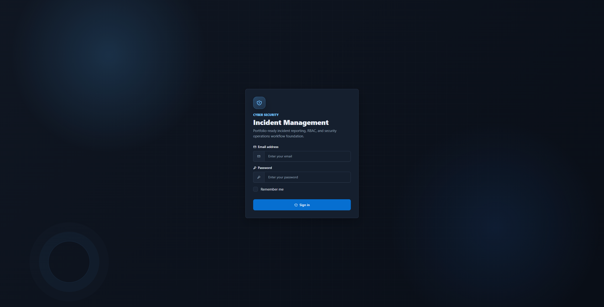
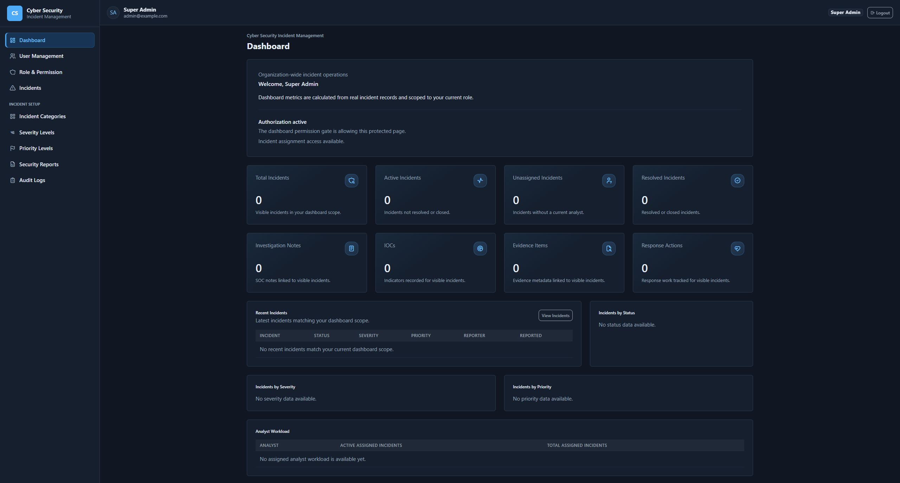

Authentication & Authorization
Session-based authentication with guest route protection, secure logout handling, and permission-gated access across every module.
Portfolio Project · Laravel 12
A production-style incident response platform for reporting, triaging, assigning, investigating, and reporting cyber security incidents — with role-based access control, IOC tracking, evidence handling, and full auditability from intake to closure.
Core Capabilities
A complete incident lifecycle toolkit: taxonomy, assignment, investigation, evidence, response, and reporting — all permission-gated and audited.
Session-based authentication with guest route protection, secure logout handling, and permission-gated access across every module.
Custom RBAC foundation with Gates, middleware, Super Admin override behavior, role assignment, and permission sync.
Structured incident creation, listing, viewing, and editing with visibility rules enforced by role and permission.
Configurable incident taxonomy — categories, severity levels, and priority levels — used to classify and prioritize every report.
Controlled status transitions with transition history, contextual notes, and close-permission restrictions.
Dedicated assignment workflow with full assignment history and restrictions around eligible assignees.
Internal SOC note tracking for triage reasoning, analysis findings, and response documentation.
Track Indicators of Compromise — IPs, domains, URLs, file hashes, emails, malware filenames, processes, and registry keys.
Private evidence metadata with upload/download workflows, file metadata, SHA-256 checksum display, and gated access.
Containment, eradication, recovery, communication, monitoring, and lessons-learned action tracking per incident.
Read-only audit trail for management and incident workflows, with filtering and safe value previews.
Filtered reporting with summary metrics, breakdown tables, analyst workload views, and CSV export.
Role-aware dashboard metrics calculated from real incident data, giving each role a relevant operational view.
Under the Hood
Built with maintainability and testability in mind, following patterns you'd expect in a real SOC tooling codebase.
Controllers stay focused on request/response flow, delegating business logic elsewhere.
Dedicated validation classes keep input rules explicit, reusable, and testable.
Service classes encapsulate business workflows and transaction-backed operations.
Modeled across users, roles, incidents, assignments, notes, IOCs, evidence, and reports.
Custom middleware and Gates enforce role and permission checks at the route level.
Extensive feature test coverage across authentication, RBAC, workflows, and route access.
Important actions across modules are logged for accountability and traceability.
Built With
Lifecycle
Every incident moves through a controlled set of stages, with transition history and notes captured along the way.
Quality
Built and verified with a portfolio-quality testing discipline rather than one-off manual checks.
Preview
A look at the dark-mode Tabler UI used throughout the application.


Explore the full source code, architecture notes, and testing strategy on GitHub.